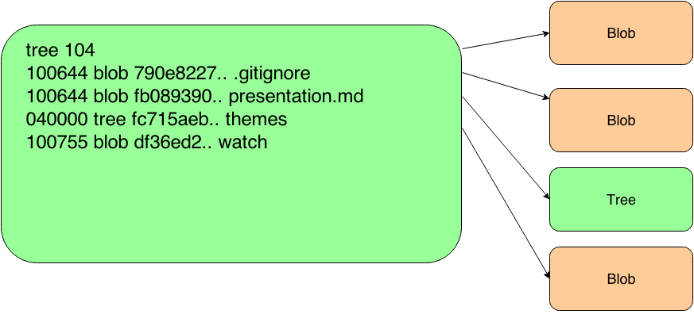
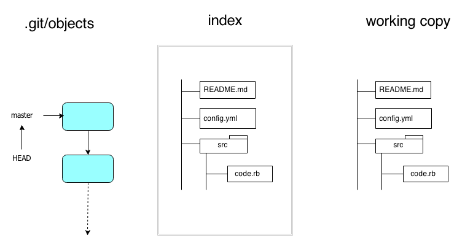
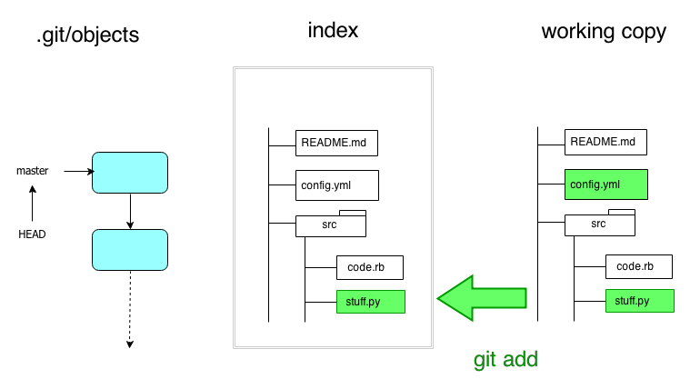
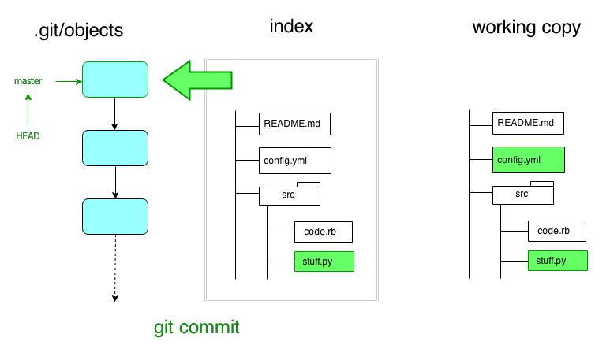
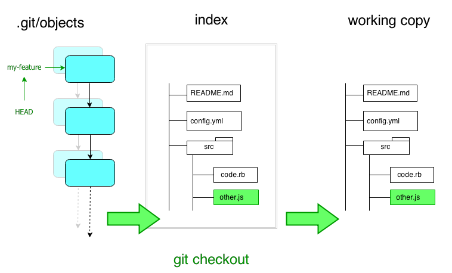
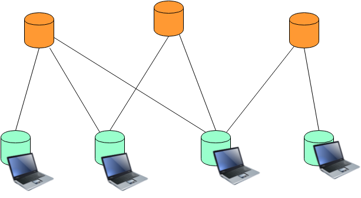
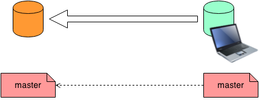

Git: The Engine Room Tour

Ash Wilson, Rackspace, DRG
Git is weird.
No, really.
- Lots of strange nomenclature.
- Odd division of labor among commands.
- Strange error messages.
Especially if you learned it by rote!
Outline
- The Object Database
- The Index and The Working Copy
- Remotes
- The Git Way
The Object Database
.git
git stores everything in a single .git/ directory.
- local configuration
- your full history
- branches, tags, the works
.git/objects
at git's heart is a filesystem-based content-addressable database.
if you peek inside, here's what you'll see:
$ find .git/objects/ -type f
.git/objects/05/b6bc38da385b07652d2d09123719193e77b1b8
.git/objects/0f/3a0b8da1742a091c822376291abceb01cda3d6
.git/objects/13/a6fbc30e1e85a2641083427bc4b2075a45ebf3
.git/objects/15/796067f1a8d405eb728206d06fef3c100ce496
.git/objects/1b/72f857b356aa5622374593fa78bff9a585a42e
.git/objects/25/9e166d36e8a9e8a0235af3a1aa2d3a2592ed1a
.git/objects: blobs
files you store in git become blobs

.git/objects: trees
directories are stored as trees

.git/objects: commits
commits are snapshots of the root tree at a particular point in time

.git/refs: branches and tags
branches and tags store a commit's address

.git/HEAD is a pointer to a branch
... and that's basically everything
the Index and the Working Copy
the Index and the Working Copy
while you're working, there are three places code can be:

git status will tell you what's in each.
Working Copy -> Index

git add -- path/to/file: stage one file at a time
git add -p: stage diffs
Index -> .git/objects

git commit persists the index in .git/objects, makes a new commit object,
and points the HEAD branch to it.
.git/objects --> Working Copy

git checkout -- path/to/file: check out a single file
git checkout -p: check out individual diffs
Sidenote: How to Name Things
git gives you a bunch of ways to name commits.
- giant 40-character sha1 checksums:
ca0d1ce34c23e9c2c875ae7c33a742e12ad1ff82 - any unique prefix:
ca0d1c - branches or tags:
master,my-feature - parent-of operator:
my-feature^,master^^,some-branch~5 - by time, absolute or relative:
master@{1 day ago} - regexp search on commit messages:
:/broken
git help rev-parse has the full list!
Merging
a merge is how you unify work from two (or more) branches.
in essence, git merge means:
"Make the branch I'm on right now also include the work of this other thing I name."
what actually happens during the merge depends entirely on the topography of history between where you are and what you're merging in.
Merging: Trivial Cases
"Nothing to merge"
when the branch you're on is already a direct descendant of the branch you're merging in.

Merging: Trivial Cases
"Fast-forward merge"
when the branch you're on is a direct ancestor of the branch you're merging in.

Merging: Recursive
this is the most common non-trivial case: a three-way merge.
the end result is a new commit with two parents: the previous HEAD and the commit that you
gave to git merge.
Merging: Recursive

Merging: Conflicts
if both lines of work modify the same part of the same file, you get a conflict:
one
one
<<<<<<< HEAD
one, changed on master
=======
one, changed on branch
>>>>>>> branch
one
one
to resolve it:
- edit the file to the state you want
git add path/to/resolved-filegit committo finalize the merge
Rebasing
an alternative to merging is to rebase.
git rebase means:
"Make it look like this other work was already done before I started mine."
Rebasing

Remotes
A Network of Clones
git clones can shuttle work to and from other clones by URL.

some clones are bare clones, meaning they have no working copy.
a remote is just shorthand for the URL of another clone somewhere.
remote-tracking branches
the last-known state of branches in other clones is tracked by special refs called remote-tracking branches.
.git/refs/remotes/origin/master
.git/refs/remotes/origin/otherbranch
.git/refs/remotes/upstream/master
.git/refs/remotes/upstream/work-it
(usually you can name these as origin/master)
git fetch
git fetch <somewhere> <something>

"download anything new from another clone and update my remote-tracking branches."
does not touch local branches until you git merge origin/master.
git pull
git pull <somewhere> <something>
convenient shortcut that combines a fetch and merge.
local branches can also track another branch, to always pull from the same place.
git push
git push <somewhere> <something>

"send everything new to another clone."
generally, you only push to bare clones.
the Git Way
1. many small commits
in git, commit records a state, while push shares a state
don't wait to be "done" before you commit!
don't "shotgun commit"
commit complete thoughts
communicate through history
2. don't change public history
a variety of git commands will rewrite history.
don't rewrite history that's "public".
"public" may mean different things depending on your team's workflow!
3. branches are your friends
git branches are cheap and disposable.
do separate work on separate branches!
pay attention to where you are when you commit.
4. pick a workflow
...and roll with it
I'm personally fond of the GitHub flow. it's great for continuous delivery or continuous deployment.
alternatives exist! pick one that meets your needs and run with it. things to consider:
- what does it mean for code to be in different branches?
- merging or rebasing when it's time to integrate?
- which is more important: clear history, or easy process?
- how hard is it for newcomers to contribute?
Questions?
resources and links
- Pro Git by Scott Chacon
- GitHub help for git and GitHub help
- git ready for bite-sized git tips and tricks
- try git for an interactive step-by-step tutorial
send me issues or pull requests at: